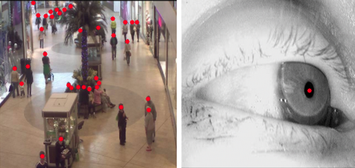
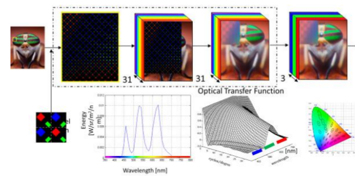
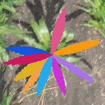
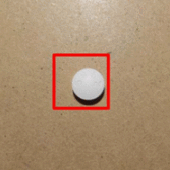
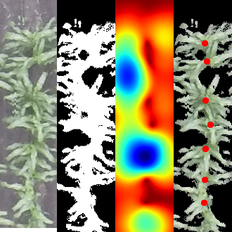
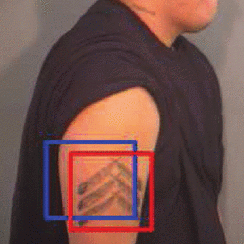
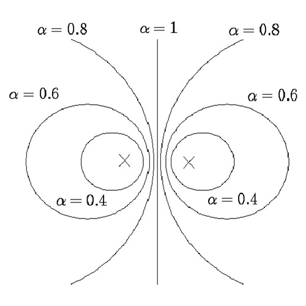

Machine Learning researcher with applications on Computer Vision and Image/Video Processing
Ph.D. from Purdue University on Computer Engineering, advised by Prof. Edward Delp at the Video and Image Processing Lab (VIPER)
Experience
Co-Founder
Oqullo
Oqullo
- - Foot traffic analytics for property managers using existing network camera feeds.
- - Developed a Multiple-Camera Multi-Target Pedestrian Tracking system.
- - Technologies used: CNN, TensorRT, AWS, Person-ReID
2021 - Present
Miami, FL
Sr. Algorithm Engineer
Samsung Display America Lab
Samsung Display America Lab
- - Research and deliver Deep Learning models for image quality metrics.
- - Patent an objective visual quality evaluation of Samsung's display pipeline.
- - Evaluated image quality, visualy and quantitatively, using Python and Matlab simulations of any display and the Human Visual System.
- - Technologies used: PyTorch, CNN, FCN, MLP, ELM, PSNR, SSIM, SCIELAB, ISETBIO
2019 - 2020
San Jose, CA
Research Assistant
ARPA-E Project VIPER Lab, Purdue University
ARPA-E Project VIPER Lab, Purdue University
- - Design a new loss function for object localization without bounding boxes with ≥ 90% accuracy.
- - Develop a system based on CNNs and FCNs for plant location and counting from UAV images.
- - Use GANs for data augmentation.
2016 - 2019
West Lafayette, IN
Research Intern
Samsung Display America Lab
Samsung Display America Lab
- - Develop a new image fidelity metric that can model any display and also models the Human Visual System.
- - Goal: Evaluate visually lossless compression in Samsung displays.
- - Resulting metric is better correlated with subjective evaluation than state-of-the-art metrics.
Summer 2017
San Jose, CA
Research Assistant
VIPER lab, Purdue University
Developed computer vision and image processing techniques for:
VIPER lab, Purdue University
Developed computer vision and image processing techniques for:
- - Medical imaging. Segment endocardium in echocardiograms and estimate heart ejection fraction.
- - Visual Surveillance. Count people from videos. Improved accuracy by incorporating crowdsourcing.
2015
West Lafayette, IN
Publications
• Locating Objects Without Bounding Boxes
J. Ribera, D. Güera, Y. Chen, and E. J. Delp
Computer Vision and Pattern Recognition (CVPR) - June 2019, Long Beach, CA
Best Paper Finalist Award (Top 1% of accepted papers) - Spotlight
J. Ribera, D. Güera, Y. Chen, and E. J. Delp
Computer Vision and Pattern Recognition (CVPR) - June 2019, Long Beach, CA
Best Paper Finalist Award (Top 1% of accepted papers) - Spotlight

• A Subpixel‐based Objective Image Quality Metric with Application to Visually Lossless Compression
G. Cook, J. Ribera, D. Stolitzka, W. Xiong
Society of Information Display, Display Week - May 2017, Los Angeles, CA
G. Cook, J. Ribera, D. Stolitzka, W. Xiong
Society of Information Display, Display Week - May 2017, Los Angeles, CA

• Counting Plants Using Deep Learning
J. Ribera, Y. Chen, C. Boomsma, and E. J. Delp
IEEE Global Conference on Signal and Information Processing (GlobalSIP) - November 2017, Montreal, Canada
J. Ribera, Y. Chen, C. Boomsma, and E. J. Delp
IEEE Global Conference on Signal and Information Processing (GlobalSIP) - November 2017, Montreal, Canada
• Locating Crop Plant Centers from UAV-Based RGB Imagery
Y. Chen, J. Ribera, C. Boomsma, and E. J. Delp
IEEE International Conference on Computer Vision Workshops (ICCVW) - October 2017, Venice, Italy
Y. Chen, J. Ribera, C. Boomsma, and E. J. Delp
IEEE International Conference on Computer Vision Workshops (ICCVW) - October 2017, Venice, Italy
• Plant Leaf Segmentation For Estimating Phenotypic Traits
Y. Chen, J. Ribera, C. Boomsma, and E. J. Delp
IEEE International Conference on Image Processing (ICIP) - September 2017, Beijing, China
Y. Chen, J. Ribera, C. Boomsma, and E. J. Delp
IEEE International Conference on Image Processing (ICIP) - September 2017, Beijing, China

• Pill Recognition Using Minimal Labeled Data
Y. Wang, J. Ribera, C. Liu, F. Zhu, and E. J. Delp
IEEE International Conference on Multimedia Big Data - April 2017, Laguna Hills, CA
Y. Wang, J. Ribera, C. Liu, F. Zhu, and E. J. Delp
IEEE International Conference on Multimedia Big Data - April 2017, Laguna Hills, CA

• Estimating Phenotypic Traits From UAV Based RGB Imagery
J. Ribera, F. He, Y. Chen, A. F. Habib, and E. J. Delp
ACM SIGKDD Conference on Knowledge Discovery and Data Mining Workshop - August 2016, San Francisco, CA
J. Ribera, F. He, Y. Chen, A. F. Habib, and E. J. Delp
ACM SIGKDD Conference on Knowledge Discovery and Data Mining Workshop - August 2016, San Francisco, CA

• Automatic and Manual Tattoo Localization
J. Kim, H. Li, J. Yue, J. Ribera, L. Huffman, and E. J. Delp
IEEE International Conference on Technologies for Homeland Security - May 2016, Waltham, MA
J. Kim, H. Li, J. Yue, J. Ribera, L. Huffman, and E. J. Delp
IEEE International Conference on Technologies for Homeland Security - May 2016, Waltham, MA

• Characterizing The Uncertainty of Classification Methods and Its Impact on Crowdsourcing
J. Ribera, K. Tahboub, and E. J. Delp
IS&T/SPIE Electronic Imaging and Multimedia Analytics in a Web and Mobile World - February 2015, San Francisco, CA
J. Ribera, K. Tahboub, and E. J. Delp
IS&T/SPIE Electronic Imaging and Multimedia Analytics in a Web and Mobile World - February 2015, San Francisco, CA

Education
Ph.D, Electrical and Computer Engineering 2015 - 2018
Purdue University West Lafayette, IN, USA
BS + MS, Telecommunications Engineering 2009 - 2014
Polytechnic University of Catalonia (TelecomBCN) Barcelona, Spain
Patents
• System and method to improve accuracy of regression models trained with imbalanced data
J. Ribera, J. Kamali. September 2019
• Measures for image testing
G. W. Cook, J. Ribera, S. Moballegh. August 2017
• System and method for plant sensing using aerial rgb imagery
E. J. Delp, Ayman F. Habib, F. He, C. Boomsma, Javier Ribera, Y. Chen. August 2017
Professional Skills
| Programming Languages: | Python, C, MATLAB, Java, HTML5, JavaScript, PHP |
| Libraries/frameworks: | TensorFlow, PyTorch, Numpy, OpenCV, scikit-learn, Docker |
| Tools: | Git, AWS, GCP |
| Languages: | 1. English (fluent), 2. Spanish (native), 3. Catalan (native), 4. French (intermediate) |
| Operating Systems: | GNU/Linux |
Graduate Courses
| MA 598: | Uncertainty Quantification | Prof. Illias Bilinois |
| ECE 642: | Information Theory | Prof. Mark R. Bell |
| BME 595: | Deep Learning | Prof. Eugenio Culurciello |
| ECE 661: | Computer Vision | Prof. Avinash C. Kak |
| ECE 638: | Digital Color Imaging Systems | Prof. Jan P. Allebach |
| ECE 641: | Model-Based Image and Signal Processing | Prof. Charles Bouman |
| ECE 637: | Digital Image Processing I | Prof. Charles Bouman |
| ECE 634: | Digital Video Systems | Prof. Amy Reibman |
| ECE 608: | Computational Models and Methods | Prof. Irith Pomeranz |
| ECE 600: | Random Variables | Prof. Mark R. Bell |
| ECE 577: | Engineering Aspects of Remote Sensing | Prof. Okan K. Ersoy |
| STAT 529: | Applied Bayesian Decisian Theory | Prof. John Deely |
| STAT 528: | Introduction to Mathematical Statistics | Prof. Xiao Wang |
| MA 504: | Real Analysis | Prof. Burgess J. Davis |
Volunteering
• Reviewer of the IEEE Signal Processing Letters
• LinuxUPC Student Organization 2011 - 2014